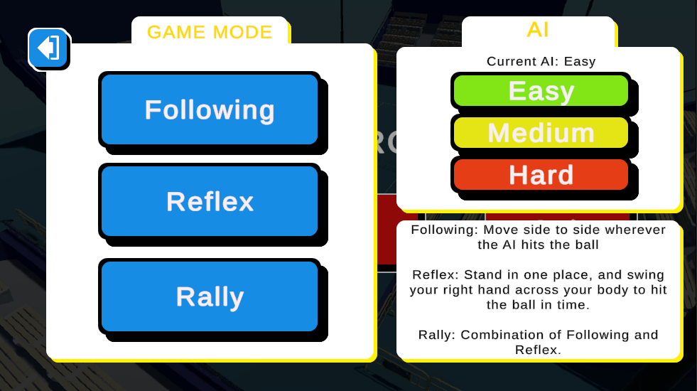

Interactive Project
Tennis Game
Created and published a playable tennis project that demonstrates initiative, creativity, and the ability to take an idea through to a finished result.
This screenshot shows the game mode and AI difficulty selection screen, which I designed to make the gameplay options clear and easy to navigate.
View on itch.io